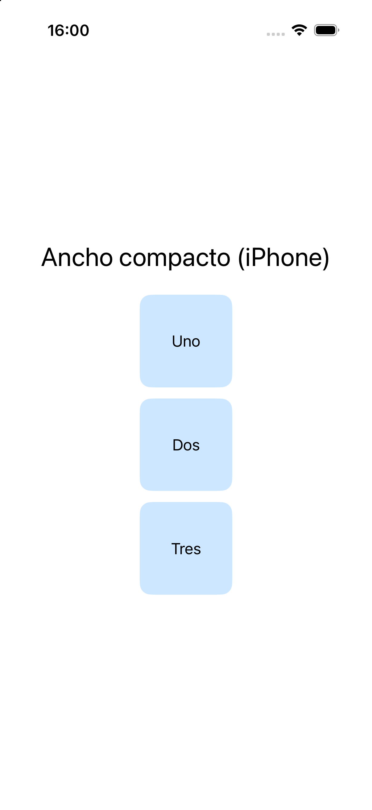
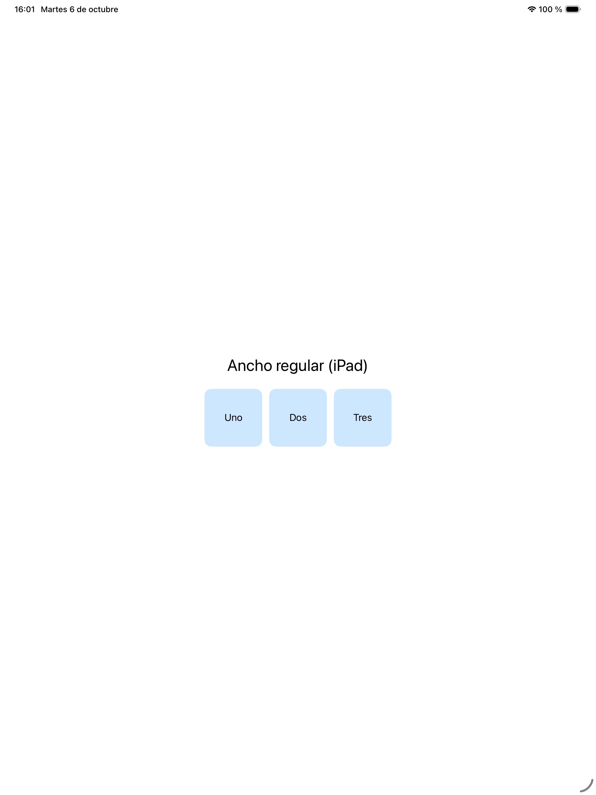
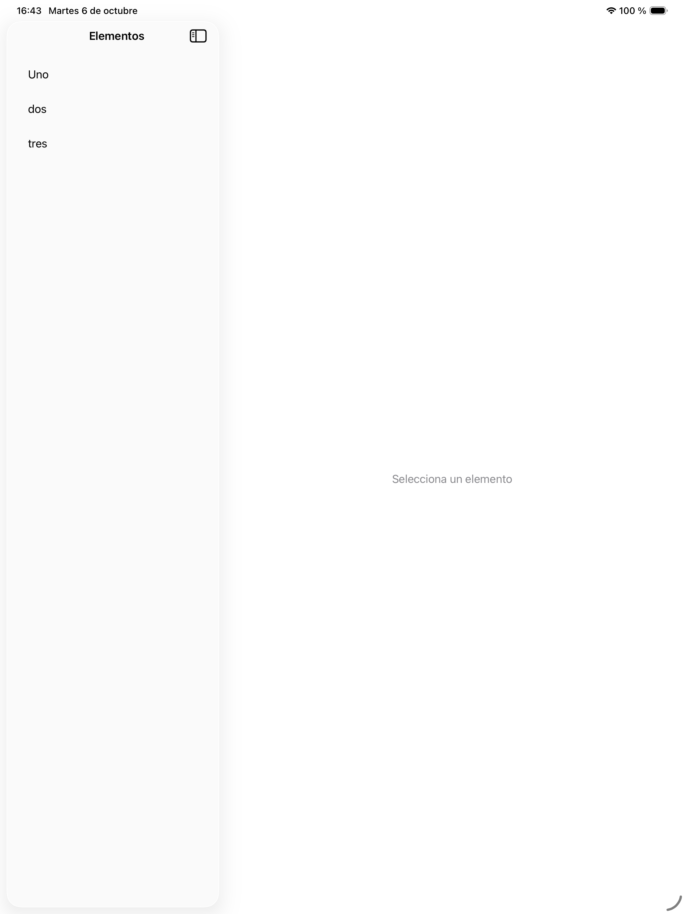
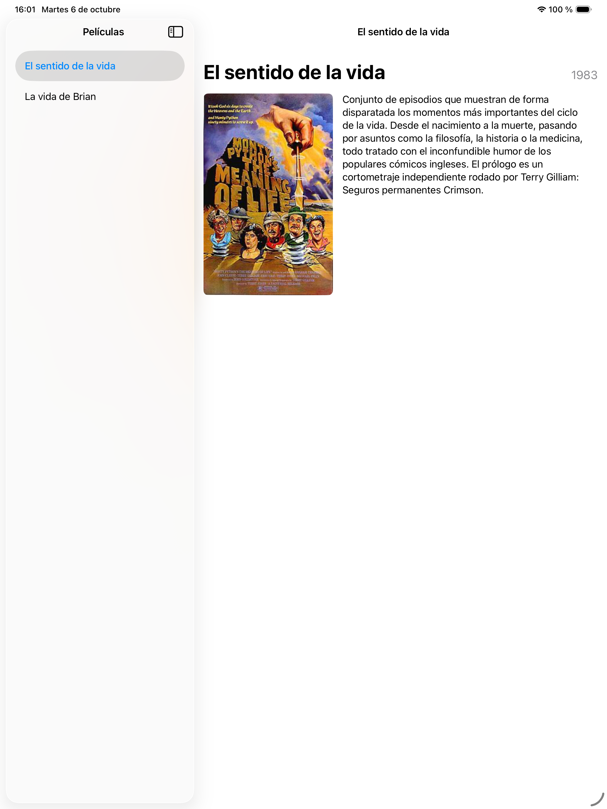

4- Diseño de aplicaciones universales
Una aplicación universal es la que funciona bien tanto en iPhone como en iPad, aprovechando el espacio de cada uno en lugar de limitarse a estirar el diseño del teléfono.
Para conseguirlo tenemos dos herramientas: las size classes, que nos dicen
cuánto espacio tenemos, y NavigationSplitView, un contenedor de varias columnas que
se adapta solo al dispositivo.
Size classes
iOS no clasifica las pantallas por pulgadas sino por size classes: cada
dimensión puede ser compact (compacta) o regular (regular). Lo importante es que
dependen del espacio realmente disponible, no del modelo de dispositivo: un iPad
con dos apps en pantalla partida puede tener ancho compacto.
A grandes rasgos:
| Situación | Ancho | Alto |
|---|---|---|
| iPhone en vertical | compacto | regular |
| iPhone en horizontal (modelos pequeños) | compacto | compacto |
| iPad a pantalla completa | regular | regular |
| iPad en Split View estrecho | compacto | regular |
En SwiftUI se leen con @Environment:
@Environment(\.horizontalSizeClass) private var anchoClase
@Environment(\.verticalSizeClass) private var altoClase
y se usan para decidir la disposición:
if anchoClase == .compact {
VStack { contenido }
} else {
HStack { contenido }
}
La ventaja de resolverlo así es que la regla de adaptación queda escrita en el código, a la vista de cualquiera que lea la vista y bajo control de versiones, en lugar de ser un ajuste invisible en algún inspector.
ViewThatFits
Cuando la decisión no depende tanto del dispositivo como de si el contenido cabe o
no, existe una alternativa más directa: ViewThatFits prueba las disposiciones que
le des en orden y se queda con la primera que quepa.
ViewThatFits(in: .horizontal) {
HStack { imagen; texto } // si cabe en horizontal, esta
VStack { imagen; texto } // si no, esta
}
Ejercicio 1 - Vista adaptable con size classes
Empezaremos con un ejercicio corto para ver las size classes en funcionamiento.
| iPhone (ancho compacto) | iPad (ancho regular) |
|---|---|
 |
 |
Creando el proyecto
Crea un proyecto iOS > App con Interface: SwiftUI llamado prueba_universal. No
necesita imágenes.
El código
import SwiftUI
struct ContentView: View {
// a) Lee aquí la size class horizontal
var esCompacta: Bool { /* b) */ }
var body: some View {
VStack(spacing: 24) {
Text(esCompacta ? "Ancho compacto (iPhone)" : "Ancho regular (iPad)")
.font(.title)
.multilineTextAlignment(.center)
let bloques = ["Uno", "Dos", "Tres"]
// c) En columna si es compacta, en fila si es regular
}
.padding()
}
func bloque(_ texto: String) -> some View {
Text(texto)
.frame(width: 100, height: 100)
.background(.tint.opacity(0.2), in: RoundedRectangle(cornerRadius: 12))
}
}
#Preview {
ContentView()
}
Se pide
a) Declara @Environment(\.horizontalSizeClass) private var anchoClase.
b) Completa esCompacta para que devuelva true cuando anchoClase sea .compact.
c) Según esCompacta, coloca los tres bloques en un VStack o en un HStack,
recorriéndolos con ForEach(bloques, id: \.self) { bloque($0) }.
d) Lanza la app en un iPhone y en un iPad y comprueba que cambian tanto el texto como la disposición.
e) Comprueba que no depende del dispositivo sino del espacio. En el iPad, abre la app en Split View junto a otra y ve estrechándola. En cuanto el ancho pasa a ser compacto, el diseño debe cambiar al de iPhone aunque sigas en un iPad.
f) Añade debajo un texto pequeño que muestre el valor de las dos size classes
(horizontal y vertical) para poder verlas mientras giras el dispositivo. Tendrás que
leer también verticalSizeClass y convertir el valor a texto con un switch.
NavigationSplitView
NavigationSplitView es un contenedor de dos (o tres) columnas. En pantallas anchas
muestra las columnas una al lado de otra; en un iPhone se colapsa solo y se
comporta como una navegación normal: primero la lista, y al seleccionar algo se navega
al detalle.
NavigationSplitView {
// columna principal (la lista)
} detail: {
// columna de detalle
}
La conexión entre lista y detalle se hace a través de la selección, no con código de navegación:
struct ContentView: View {
let contenido = ["Uno", "dos", "tres"]
@State private var seleccionado: String?
var body: some View {
NavigationSplitView {
List(contenido, id: \.self, selection: $seleccionado) { item in
Text(item)
}
.navigationTitle("Elementos")
} detail: {
if let seleccionado {
Text(seleccionado).font(.largeTitle)
} else {
Text("Selecciona un elemento").foregroundStyle(.secondary)
}
}
}
}

Fíjate en cómo se comunican las dos columnas: a través de un dato, no llamando a
la otra vista. La lista escribe en seleccionado, y el detalle se dibuja a partir de
ese valor. Ninguna de las dos tiene una referencia a la otra.
Por eso la columna de detalle tiene que contemplar el caso de que no haya nada
seleccionado, que es como arranca la app. De ahí que seleccionado sea un opcional y
que haya un else con un mensaje.
Ejercicio 2 - Películas
Este es el ejercicio final del libro y reúne casi todo lo visto: un modelo propio, una lista maestra, una vista de detalle y una disposición que se adapta al espacio.

Creando el proyecto
Crea un proyecto iOS > App con Interface: SwiftUI llamado ejercicio_peliculas,
y añade a los Assets la imagen de
imagenes_peliculas.zip
(sentido.jpg).
El modelo
Crea Pelicula.swift:
import Foundation
struct Pelicula: Identifiable, Hashable {
let id = UUID()
let titulo: String
let caratula: String
let fecha: String
let descripcion: String
}
extension Pelicula {
static let ejemplos = [
Pelicula(titulo: "El sentido de la vida",
caratula: "sentido",
fecha: "1983",
descripcion: "Conjunto de episodios que muestran de forma disparatada los momentos más importantes del ciclo de la vida.")
// a) Añade aquí al menos una película más
]
}
Hashable hace falta para poder usar la película como valor de selección de la
List.
La vista de detalle
Crea DetailView.swift:
import SwiftUI
struct DetailView: View {
let pelicula: Pelicula
var body: some View {
ScrollView {
VStack(alignment: .leading, spacing: 16) {
// b) Cabecera: título a la izquierda y año a la derecha
// c) Carátula y descripción, en fila o en columna según quepa
}
.padding()
}
.navigationTitle(pelicula.titulo)
.navigationBarTitleDisplayMode(.inline)
}
var caratula: some View {
Image(pelicula.caratula)
.resizable()
.scaledToFit()
.frame(maxWidth: 220)
.cornerRadius(8)
}
var descripcion: some View {
Text(pelicula.descripcion)
.frame(maxWidth: 420, alignment: .leading)
}
}
La vista principal
Y ContentView.swift:
import SwiftUI
struct ContentView: View {
let peliculas = Pelicula.ejemplos
// d) Estado con la película seleccionada
var body: some View {
NavigationSplitView {
// e) La lista con selección
} detail: {
// f) El detalle, o un texto si no hay nada seleccionado
}
}
}
#Preview {
ContentView()
}
Se pide
a) Añade al menos una película más al array ejemplos. Puedes reutilizar la misma
carátula o añadir otras imágenes a los Assets.
b) Escribe la cabecera del detalle: un HStack con el título
(.font(.largeTitle.bold())), un Spacer(minLength: 12) y el año
(.font(.title3), .foregroundStyle(.secondary)). Usa
HStack(alignment: .firstTextBaseline) para que título y año queden alineados por la
línea base del texto.
Por qué un Spacer y no un ancho fijo
Podrías colocar el año dándole al título un ancho fijo, pero entonces un título
largo se saldría por encima del año, o quedaría cortado. Con HStack + Spacer el
reparto lo hace el contenedor: el Spacer ocupa lo que sobra, y si no sobra nada
el título se ajusta en varias líneas en lugar de solaparse. Pruébalo poniendo un
título muy largo en una de tus películas.
c) Coloca la carátula y la descripción usando ViewThatFits(in: .horizontal), con un
HStack como primera opción y un VStack como segunda. Recuerda que ya tienes las dos
subvistas (caratula y descripcion) definidas como propiedades.
d) Declara @State private var seleccionada: Pelicula?. Fíjate en que es
opcional: al arrancar no hay nada seleccionado.
e) Escribe la lista con selección:
List(peliculas, selection: $seleccionada) { pelicula in
Text(pelicula.titulo).tag(pelicula)
}
.navigationTitle("Películas")
El .tag(pelicula) es lo que conecta cada fila con el valor de selección.
f) En el bloque detail:, muestra DetailView(pelicula: seleccionada) si hay
selección, y si no un Text("Selecciona una película") en color secundario. Usa
if let seleccionada { ... } else { ... }.
g) Ejecuta la app en un iPad y comprueba que al pulsar una película aparece su
ficha en la columna derecha. Gíralo y observa cómo ViewThatFits cambia la
disposición de la carátula y la descripción.
h) Ejecuta ahora la app en un iPhone. El NavigationSplitView se colapsa: verás
primero la lista, y al pulsar una película se navega a la ficha con un botón de volver.
No has escrito ni una línea para que eso ocurra.
i) Para ampliar. Añade un buscador a la lista de películas con lo aprendido en la
sesión 3, de forma que se puedan filtrar por título. Acuérdate de usar
placement: .navigationBarDrawer(displayMode: .always).
Para pensar
seleccionada es de tipo Pelicula?, es decir, opcional. ¿Qué tendrías que
cambiar en ContentView si quisieras que al arrancar apareciese ya seleccionada la
primera película? ¿Y qué problema tendrías si la lista pudiera estar vacía?